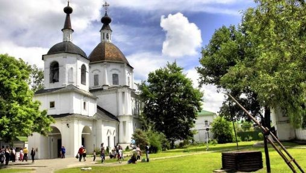

Михаил Васильевич Ковалёв (1911—1944)
Участник Великой Отечественной войны, командир 183-й танковой бригады (10-й танковый корпус, 40-я армия, Воронежский фронт), подполковник. Герой Советского Союза
Ранее этот казачий городок назывался просто Черкасск. Первые письменные упоминания о Черкасске датируются 1593 годом. Много смуты повидал Черкасск на своем веку. Здесь в XVII веке родился Стенька Разин, отсюда же он начинал свое восстание. Бывал здесь и Емельян Пугачев, и предводитель восставших крестьян Кондратий Булавин. Помнит городок и знатные военные походы. Ведь именно отсюда, с вольных берегов Дона в далеком 1637 г. отправились казаки брать неприступный турецкий Азак (ныне город Азов). Со временем Черкасск утратил свое военное значение. Постоянные смуты в казачьей вольнице не устраивали царскую власть, разрушительные пожары и наводнения мешали нормальной оседлой жизни. В итоге в 1805 году уроженец городка, войсковой атаман М.И. Платов принял решение основать новую столицу донского казачества – город Новочеркасск. С тех пор Черкасск стали именовать Старочеркасском. А к концу XIX в. из-за оттока населения казачье поселение потеряло статус города, оставшись в пределах первоначальных границ того донского острова, где в XVI веке и появились его первые постройки.


Старочеркасск - древняя казачья станица. Крупнейший на юге России музей заповедник в котором можно посмотреть на сохранившиеся до наших дней здания и храмы, памятники и экспонаты.
